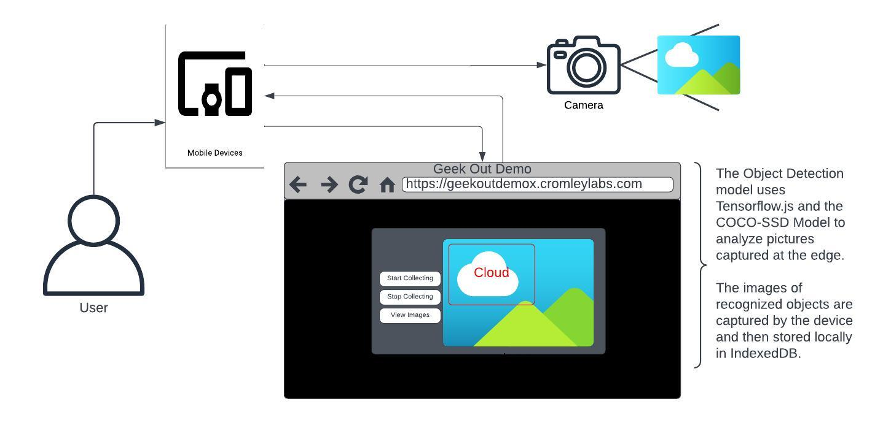

Geek Out: Edge Computing and Space
Part 2: Work Out
About Me
My name is Lars Cromley. I am a technology fellow. My background is in systems engineering and software development. I consider myself a lifelong learner, constantly exploring beyond my field. I have worked in cloud and distributed systems for over a decade and have helped our clients in both public and private sectors to bring solutions to life. I focus on bringing multi-disciplinary thinking to bear on some of today's toughest problems.
What did we talk about so far?
-
Overview
Explored the role of edge computing in space exploration and its benefits.
Discussed the use of edge computing for controlling Mars rovers and enabling real-time decision-making.
Explored edge computing's application in earth observation, remote sensing, and GeoIntelligence.
-
Key Takeaways
Edge computing reduces latency and enables real-time data processing and analysis.
It improves mission efficiency and scientific discoveries in space exploration.
Edge computing optimizes data processing and communication in earth observation and remote sensing.
It offers opportunities for improved mission efficiency, better resource utilization, and increased autonomy.
-
Next Steps
Explore further advancements in edge computing for space technology.
Stay updated with emerging technologies and trends in the field.
Consider potential collaborations and opportunities.
Questions
Are there any questions about what we have covered so far?
About Today's Session
Objective: Practitioners will learn how to use the technology and gain some experience.
So what are we working with?
Object detection at the edge.
We are going to look at some use cases, review a diagram, dive into some code, and work with a functional demo of technology at the edge.
We will be talking about the use case for such technology, the models we are using, the tools we use to build something like this demo, and how it works.
Use Case 1: Space Travel
Edge Computing is crucial in space travel and exploration
- Real-Time Data Processing
- Reduced Reliance on Long-Distance Communications
- Offline Capabilities
- Resource Efficiency
- Scalability and Adaptability
Use Case 2: Earth Observation and Remote Sensing
Improving timeliness and increasing understanding of our world
- Real-Time Data Processing
- Reduced Dependency on High-Speed Connectivity
- Offline Capabilities
- Resource Efficiency
- Scalability and Customization
The Demo
